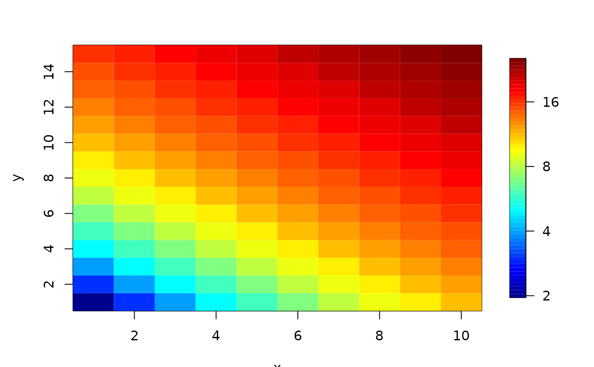

image.plot.RdThis function combines the R image function with some automatic
placement of a legend. This is done by splitting the plotting region
into two parts. Putting the image in one and the legend in the other. After the
legend is added the plot region is reset to the image plot.
This function also allows for plotting quadrilateral cells in the image format that
often arise from regular grids transformed with a map projection or a scaling and rotation of coordinates. See the example where this function can create a similar graphic
to the ggplot package.
image.plot functionality has been frozen, see the more recent function
imagePlot which is backwardly compatible with this function.
# S3 method for plot
image(...,
add = FALSE,
breaks= NULL, nlevel = 64, col = NULL,
horizontal = FALSE, legend.shrink = 0.9, legend.width = 1.2,
legend.mar = ifelse(horizontal, 3.1, 5.1), legend.lab = NULL,
legend.line= 2,
graphics.reset = FALSE, bigplot = NULL, smallplot = NULL,
legend.only = FALSE, lab.breaks = NULL,
axis.args = NULL, legend.args = NULL, legend.cex=1.0,
midpoint = FALSE, border = NA,
lwd = 1,verbose = FALSE )The usual arguments to the image function as x,y,or z or as a
list with x,y,z as components. One can also include a breaks
argument for an unequal spaced color scale with color scale boundaries
at the breaks (see example below). If a "quadrilateral grid",
arguments must be explicitly x,y and z with x, and y being matrices of
dimensions equal to, or one more than, z giving the grid
locations. The basic concept is that the coordinates of x and y still
define a grid but the image cells are quadrilaterals rather than being
restricted to rectangles. NOTE: graphical argruments passed here will only have impact
on the image plot. To change the graphical defaults for the legend use
the individual legend arguments and/or legend.arg listed
below.
If true add image and a legend strip to the existing plot.
Plot coordinates for image plot. If not passed these will be determined within the function.
This only works if x and y are matrices -- if NA the quadralaterals will have a border color that is the same as the interior color. Otherwise this specifies the color to use.
Break points in sorted order to indicate the intervals for assigning
the colors. Note that if there are nlevel colors there should be (nlevel+1)
breakpoints. If breaks is not specified (nlevel+1) equally spaced breaks are created where the first and last bin have their midpoints at the minimum and maximum values in z or at zlim.
Color table to use for image (See help file on image for details.).
Default is a pleasing range of 64 divisions suggested by Tim Hoar and is similar to
the MATLAB (TM) jet color scheme. Note that if breaks is specified there must be one less color specified than the number of breaks.
If FALSE (default) the plotting region ( plt in par) will not be reset and one can add more information onto the image plot. (e.g. using functions such as points or lines.) If TRUE will reset plot parameters to the values before entering the function.
If false (default) legend will be a vertical strip on the right side. If true the legend strip will be along the bottom.
If breaks are supplied these are text string labels to put at each break value. This is intended to label axis on a transformed scale such as logs.
Additional arguments for the axis function used to create the legend axis. (See example below adding a log scaling.)
If TRUE just add the
legend to a the plot in the plot region defined by the coordinates in
smallplot. In the absence of other information the range for the legend
is determined from the zlim argument.
Arguments for a complete specification of the legend label, e.g. if you need to the rotate text or other details. This is in the form of list and is just passed to the mtext function and you will need to give both the side and line arguments for positioning. This usually will not be needed. (See example below.)
Character expansion to change size of the legend label.
Distance in units of character height (as in mtext)
of the legend label from the
color bar. Make this larger if the label collides with the color axis labels.
Width in characters of legend margin that has the axis. Default is 5.1 for a vertical legend and 3.1 for a horizontal legend.
Label for the axis of the color legend. Default is no label as this is usual evident from the plot title.
Amount to shrink the size of legend relative to the full height or width of the plot.
Width in characters of the legend strip. Default is 1.2, a little bigger that the width of a character.
Line width of bordering lines around pixels. This might need to be set less than 1.0 to avoid visible rounding of the pixel corners.
This option for the case of unequally spaced grids with x and y being matrices of grid point locations. If FALSE (default) the quadralaterals will be extended to surround the z locations as midpoints. If TRUE z values will be averaged to yield a midpoint value and the original grid points be used to define the quadralaterals. (See help on poly.image for details). In most cases midpoint should be FALSE to preserve exact values for z and let the grid polygons be modified.
Number of color levels used in legend strip
Plot coordinates for legend strip. If not passed these will be
determined within
the function. Be sure to leave room for the axis labels. For example, if
the legend is on the
right side smallplot= c(.85,.9,0,1) will leave (.1 in plot
coordinates) for the
axis labels to the right of the color strip. This argument is useful
for drawing a
plot with the legend that is the same size as the plots without legends.
If TRUE prints intermediate information about setting up plots (for debugging).
After exiting, the
plotting region may be changed to make it possible to add more features to
the plot. To be explicit, par()\$plt may be changed to reflect a
smaller plotting region that has accommodated room for the legend subplot.
If xlim and ylim are specified the pixels may overplot the axis lines.
Just use the box function to redraw them.
This is a function using the basic R graphics. The coding was done to make it easier for users to see how this function works and to modify.
How this function works:
The strategy for image.plot is simple, divide the plotting region
into two smaller regions bigplot and smallplot. The image
goes in one and the legend in the other. This way there is always room for
the legend. Some adjustments are made to this rule by not shrinking the
bigplot if there is already room for the legend strip and also
sticking the legend strip close to the image plot. One can specify the
plot regions explicitly by bigplot and smallplot if the
default choices do not work.(Note that these in figure coordinates.
) There may be problems with small plotting
regions in fitting both of these elements into the plot region and one may
have to change the default character sizes or margins to make things fit.
Sometimes this function will not reset the type of margins correctly and the
"null" call par(mar = par("mar")) may help to fix this issue.
The text is too small!
This always seems to happen as one is rushing to finish a talk and the figures have tiny default axis labels. Try just calling the function fields.style before plotting. List out this function to see what is changed, however, all text is increased by 20% in size.
Why ``image.plot" and not ``image"? The R Base function image is very
useful but it is awkward to place a legend quickly. However, that said if you are
drawing several image plots and want a common legend use the image function
and just just use image.plot to add the legend. See the example in the
help file. Note that you can use image to draw a bunch of images and then follow with image.plot and legend.only=TRUE to add a common legend. (See examples below.)
Almost cloropleths too: It should be noted that this image function is slightly
different than a cloropleth map because
the legend is assuming that a continous scale has been discretized into a series of colors.
To make the image.plot function as a cloropleth graphic one would of course use the
breaks option
and for clarity perhaps code the different regions as different integer values.
In addition, for publication quality one would want to use the legend.args to
add more descriptive labels at the midpoints in the color strip.
Relationship of x, y and z:
If the z component is a matrix then the user should be aware that
this function locates the matrix element z[i,j] at the grid locations
(x[i], y[j]) this is very different than simply listing out the
matrix in the usual row column tabular form. See the example below
for details on the difference in formatting. What does one do
if you do not really have the "z" values on a regular grid? See the
functions quilt.plot.Rd and as.image to discretise
irregular observations to a grid. If the values makes sense as points on
a smooth surface see Tps and fastTps for surface interpolation.
Adding separate color to indicate the grid box boundaries. Sometimes you want to show to the grid box borders to emphasize this is not a smooth surface. To our knowledge there is no easy way to do this as an option in image. But if your image is formatted in the "poly image" style where x and y are also matrices you can use the polyimage (see the border argument above) option to draw in boundaries.
Grids with unequally spacing -- quadrialteral pixels:
If x and y are matrices that are a smooth transformation of a regular grid then
z[i,j] can be interperted as representing the average value in a quadrilateral that is centered at x[i,j] and
y[i,j] (midpoint TRUE). The details of how this cell is found
are buried in poly.image but it it essentially found using midpoints between the centers. If midpoint is FALSE then x
and y are interpreted as the corners of the quadrilateral cells. But
what about z? The four values of z are now averaged to represent a
value at the midpoint of the cell and this is what is used for
plotting. Quadrilateral grids were added to help with plotting
the gridded output of geophysical models where the regular grid is
defined according to one map projection but the image plotting is required
in another projection. Typically the regular grid becomes distorted in
a smooth way when this happens. See the regional climate example for
a illustration of this application. One can add border colors in this case
easily because these choices are just passed onto the polygon function.
Adding the pixel grid for rectangular images:
For adding the grid of pixel borders to a rectangular image try this example
after calling image.plot.
dx <- x[2] - x[1]
dy <- y[2] - y[1]
xtemp<- seq( min( x)- dx/2, max(x)+ dx/2,
length.out = length(x) +1)
ytemp<- seq( min( y)- dy/2, max(y)+ dy/2,
length.out = length(y) +1)
xline( xtemp, col="grey", lwd=2)
yline( ytemp, col="grey", lwd=2) Here x and y here are the x and y grid values from the image list.
Fine tuning color scales: This function gives some flexibility in
tuning the color scale to fit the rendering of z values. This can
either be specially designed color scale with specific colors ( see
help on designer.colors), positioning the colors at specific
points on the [0,1] scale, or mapping distinct colors to intervals of
z. The examples below show how to do each of these. In addition, by
supplying lab.break strings or axis parameters one can
annotate the legend axis in an informative matter.
Adding just the legend strip:
Note that to add just the legend strip all the numerical information one
needs is the zlim argument and the color table! See examples for tricks in positioning.
About color tables:
We like tim.colors
as a default color scale and so if this what you use this can be omitted.
Unfortunately this is not the default for the image function. Another
important color scale is viridis() from the viridis package.
It seems that by
and large everyone seems to react postively to viridis -- guess that is the
point!
The
topographic color scale (topo.colors) is
also a close second showing our geophysical bias.
Users may find larry.colors useful for coding distinct regions
in the style of a cloropleith map. See also
terrain.colors for a subset of the topo ones and designer.colors to "roll
your own" color table. One nice option in this last function is to fix
color transitions at
particular quantiles of the data rather than at equally spaced
intervals. For color choices see how the nlevels argument figures
into the legend and main plot number of colors. Also see the colors
function
for a listing of all the colors that come with the R base environment.
The details of placing the legend and dividing up the plotting real estate: It is surprising how hard it is to automatically add the legend! All "plotting coordinates" mentioned here are in device coordinates. The plot region is assumed to be [0,1]X[0,1] and plotting regions are defined as rectangles within this square. We found these easier to work with than user coordinates.
legend.width and legend.mar are in units of character
spaces. These units are helpful in thinking about axis labels that
will be put into these areas. To add more or less space between the
legend and the image plot alter the mar parameters. The default mar
settings (5.1,5.1,5.1,2.1) leaves 2.1 spaces for vertical legends and
5.1 spaces for horizontal legends.
There are always problems with
default solutions to placing information on graphs but the choices made
here may be useful for most cases. The most annoying thing is that after
using image.plot and adding information the next plot that is made may
have the slightly smaller plotting region set by the image plotting.
The user should set reset.graphics=TRUE to avoid the plotting
size
from changing. The disadvantage, however, of resetting the graphics
is that one can no longer add additional graphics elements to the
image
plot. Note that filled.contour always resets the graphics but provides
another mechanism to pass through plotting commands. Apparently
filled.contour, while very pretty, does not work for multiple plots.
About setup and add legend functions These came about to create a
scatterplot in Base R Graphics where the points are colored with a color scale
and the scale can be plotted as part of the figure
See bubblePlot for a version of this kind of figure. The
function setupLegend should be used first to create enough space
to add a color scale later. After plotting then addLegend will add the
color scale. Note that if the color scale has been created by the color.scale function the last call to this function will use the color scale and limits created in color.scale.
In summary here is an example of using these functions with the colors in mind:
info<- setupLegend()
colTab<- rainbow(10)
plot( 1:10, 201:210, col=colTab, pch=16)
addLegend(info, col=colTab, zlim = c(1,10))Here is one where four colors are mapped to specific values (ala image).
info<-setupLegend()
colTab= color.scale(201:210, rainbow(4))
plot( 1:10, 201:210, col=colTab, pch=16 )
addLegend(info, col=colTab, zlim = c(201,210) )More complete graphics languages, such as that in ggplot, do not need such functions because the entire graphics segment is parsed to create the complete figure. In this way room for a color scale can be created automatically. The functions proposed here are a simple work around to create these figures using base R graphics.
Other packages
levelplot that is part of the lattice package has a very
similar function to image.plot and a formula syntax in the call.
The geom_raster for setting up a graphics object within ggplot is another alternative forr image plots with legends.
See the last example to compare the steps in creating an image plot using image.plot that is close to the ggplot version. Mostly this involves resetting base graphics parameters using the par function.
Multiple images:
By keeping the zlim argument the same across images one can generate the
same color scale. (See the image help file.) One useful technique for a
panel of images is to just draw the images with good old image
and then use image.plot to add a legend to the last plot. (See example
below for messing with the outer margins to make this work.)
Usually a square plot (pty="s") done in a rectangular plot
region will
have room for the legend stuck to the right side without any other
adjustments. See the examples below for more complicated arrangements
of multiple image plots and a summary
legend.
The reader is also referred to the package autoimage as a set of
functions in base to help with drawing multiple images and also more
support for geographic coordinates.
x<- 1:10
y<- 1:15
z<- outer( x,y,"+")
image.plot(x,y,z)
# or
obj<- list( x=x,y=y,z=z)
image.plot(obj, legend.lab="Sverdrups")
################################################################
# the next sequence of examples explain how to quickly
# adpat this basic plot to include morre features
# In another direction see the very last example where
# we use many of the setting in base R graphic to mimic a
# (beautiful) ggplot version.
###############################################################
#
# add some points on diagonal using standard plot function
#(with some clipping beyond 10 anticipated)
points( 5:12, 5:12, pch="X", cex=3)
# in general image.plot will reset the plot window so you
# can add any feature that normally works in base R
# e.g. lines, text, contour, boxplots, ....
#
# adding breaks and distinct colors for intervals of z
# with and without lab.breaks
brk<- quantile( c(z))
image.plot(x,y,z, breaks=brk, col=rainbow(4))
# annotate legend strip with the break point values and add a label
image.plot(x,y,z, breaks=brk, col=rainbow(4),
lab.breaks=names(brk))
#
# compare to
zp <-quantile(c(z), c( .05, .1,.5, .9,.95))
image.plot(x,y,z,
axis.args=list( at=zp, labels=names(zp) ) )
# a log scaling for the colors
ticks<- c( 1, 2,4,8,16,32)
image.plot(x,y,log(z), axis.args=list( at=log(ticks), labels=ticks))

# see help file for designer.colors to generate a color scale that adapts to
# quantiles of z.
# Add some color scales together here is an example of 5 blues to white to 5 reds
# with white being a specific size.
colorTable<- designer.colors(11, c( "blue","white", "red") )
# breaks with a gap of 10 to 17 assigned the white color
brks<- c(seq( 1, 10,,6), seq( 17, 25,,6))
image.plot( x,y,z,breaks=brks, col=colorTable)
#
#fat (5 characters wide) and short (50% of figure) color bar on the bottom
image.plot( x,y,z,legend.width=5, legend.shrink=.5, horizontal=TRUE)
# adding a label with all kinds of additional arguments.
# use side=4 for vertical legend and side= 1 for horizontal legend
# to be parallel to axes. See help(mtext).
image.plot(x,y,z,
legend.args=list( text="unknown units",
col="magenta", cex=1.5, side=4, line=2))
# and finally add some grid lines
dx <- x[2] - x[1]
dy <- y[2] - y[1]
xtemp<- seq( min( x)- dx/2, max(x)+ dx/2,
length.out = length(x) +1)
ytemp<- seq( min( y)- dy/2, max(y)+ dy/2,
length.out = length(y) +1)
xline( xtemp, col="grey", lwd=2)
yline( ytemp, col="grey", lwd=2)
###############################################################
#### example using an irregular quadrilateral grid
###############################################################
data( RCMexample)
image.plot( RCMexample$x, RCMexample$y, RCMexample$z[,,1])
ind<- 50:75 # make a smaller image to show bordering lines
image.plot( RCMexample$x[ind,ind], RCMexample$y[ind,ind], RCMexample$z[ind,ind,1],
border="grey50", lwd=2)
###############################################################
#### multiple images with a common legend
###############################################################
set.panel()
#> plot window will lay out plots in a 1 by 1 matrix
# Here is quick but quirky way to add a common legend to several plots.
# The idea is leave some room in the margin and then at the end
# overplot the legend in this margin
par(oma=c( 0,0,0,4)) # margin of 4 spaces width at right hand side
set.panel( 2,2) # 2X2 matrix of plots
#> plot window will lay out plots in a 2 by 2 matrix
# now draw all your plots using usual image command
for ( k in 1:4){
data<- matrix( rnorm(150), 10,15)
image( data, zlim=c(-4,4), col=tim.colors())
# and just for fun add a contour plot
contour( data, add=TRUE)
}
par(oma=c( 0,0,0,1))# reset margin to be much smaller.
image.plot( legend.only=TRUE, zlim=c(-4,4))
# image.plot tricked into plotting in margin of old setting
set.panel() # reset plotting device
#> plot window will lay out plots in a 1 by 1 matrix
#
# Here is a more learned strategy to add a common legend to a panel of
# plots consult the split.screen help file for more explanations.
# For this example we draw two
# images top and bottom and add a single legend color bar on the right side
# first divide screen into the figure region (left) and legend region (right)
split.screen( rbind(c(0, .8,0,1), c(.8,1,0,1)))
#> [1] 1 2
# now subdivide up the figure region into two parts
split.screen(c(2,1), screen=1)-> ind
zr<- range( 2,35)
# first image
screen( ind[1])
image( x,y,z, col=tim.colors(), zlim=zr)
# second image
screen( ind[2])
image( x,y,z+10, col=tim.colors(), zlim =zr)
# move to skinny region on right and draw the legend strip
screen( 2)
image.plot( zlim=zr,legend.only=TRUE, smallplot=c(.1,.2, .3,.7),
col=tim.colors())
close.screen( all=TRUE)
# you can always add a legend arbitrarily to any plot;
# note that here the plot is too big for the vertical strip but the
# horizontal fits nicely.
plot( 1:10, 1:10)
image.plot( zlim=c(0,25), legend.only=TRUE)
image.plot( zlim=c(0,25), legend.only=TRUE, horizontal =TRUE)
# combining the usual image function and adding a legend
# first change margin for some more room
if (FALSE) {
par( mar=c(10,5,5,5))
image( x,y,z, col=topo.colors(64))
image.plot( zlim=c(0,25), nlevel=64,legend.only=TRUE, horizontal=TRUE,
col=topo.colors(64))
}
#
# adding a legend by automatically making room.
# and coloring points
info<- setupLegend()
colTab<- rainbow(10)
plot( 201:210, 201:210, col=colTab, pch=16)
addLegend(info, col=colTab, zlim = c(201,210))
#
#######################################################
##### Comparison to ggplot
#######################################################
# the following example was created as way avoid doing more important
# things
# Note how close base graphics can get to reproducing the ggplot style.
if (FALSE) {
library( viridis)
library(ggplot2)
x<- 1:20
y<- 1:24
z<- outer( x, y, "+")
# ggplot version
mesh<- expand.grid( x= x, y=y)
mesh$z <- c(z)
ggplot( data=mesh, aes( x=x, y=y, fill=z)) +
geom_raster(interpolate= FALSE) +
scale_fill_continuous(type = "viridis") +
theme_bw()
# inflate range to give a margin around image
xr<- range(x) + c(-.08, .08)* diff( range(x))
yr<- range(y) + c(-.08, .08)* diff( range(y))
# changing these graphics parameters tends to push
# text closer to the axes.
par( mgp=c(1.5,.5,0),mar=c(2.5,2.5,.5,1), cex=.8)
image.plot(x,y,z,
col = viridis(128),
legend.shrink = .27,
xlim = xr,
ylim = yr,
legend.width = 1.5,
legend.mar = 3,
legend.args = list( text = "z",
cex = .8,
side = 3,
line = .5)
)
}